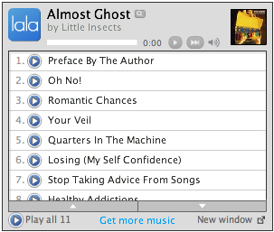
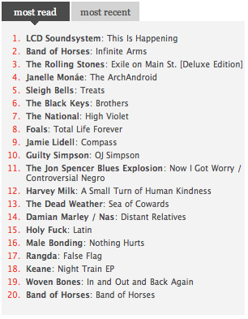

|
news
|
intern review
Many applicants for internships might be office-savvy, but remain Pitchfork-clueless. Conversely, they could be Pitchfork fanatics and useless around the office. As if the two were mutually exclusive, if they've even heard of Pitchfork, chances are they fail to appreciate the website's accessible brand of pop musicology or vice versa. But, like a Jens Lekman tune filled with top-notch songwriting that never sacrifices envelope-pushing, sample juxtaposition and quality production, Omar Delarosa's office savviness never comes at the cost of all-around Pitchfork-appreciation. Having worked in office environments via staffing agencies since his freshman year of college at University of Central Florida, Delarosa honed his typing skills to WPMs approaching the BPMs of your average Warp Records IDM track. Four years as an English major cranking out essays on Jonathan Keats also made Microsoft Word as second nature to Delarosa as a Boss SP303 sampler is to Noah Lennox. After finishing his B.A. in 2007, Delarosa spent the better-part of three school years teaching English to inner-city kids at a Central-Florida middle school through a state program granting three-year certification to non-education majors. This experience taught him not only the skill of active time management through Outlook calendars, but also the power of PowerPoint presentations to make the poetry of Langston Hughes and T.S. Eliot accessible to preteens in the same way that Vampire Weekend uses the rock band format to make afro-pop and classical music accessible to American indie-rock fans. During that same span of time from about 2003 to early 2010, Delarosa acquired other skills relevant to an administrative assistant internship. He spent his time as an editorial intern and then writing freelance for the Orlando Weekly, Central Florida's version of The Village Voice. There he learned the basics of copy-editing, fact-checking, entering articles into an online database for web publishing and various editorial tasks at a web/print news organization. Furthermore, Delarosa wrote several music articles for Ink19.com including one in which he interviewed Gregg Gillis (aka Girl Talk) and learned all sorts of things about pop music sample collages and Gillis' life as a copyright outlaw. It's possible that some other applicant out there is a Pitchfork fanatic that has read Pitchfork since the site was called Turntable and sports a "p4k 4eva" tattoo on his/her shoulder. However, such a fanatic could annoy the office staff, asking for autographs from Pitchfork editors and contributors all the time in the same way a Pitchfork-clueless, software-manual-quoting, Microsoft Office fanatic resembling John Hodgman's personification of a P.C. could. Instead, Delarosa strikes the ideal balance between Pitchfork-familiarity and office-usefulness and never takes either to the extreme. Combined with his open availability for the summer and a willingness to work for only career experience, Delarosa would be an office asset and make a pretty awesome administrative assistant at Pitchfork in Brooklyn. -Asoraled Ramo, June 5, 2010
|
intern player  r.i.p. lala  |
|||||||